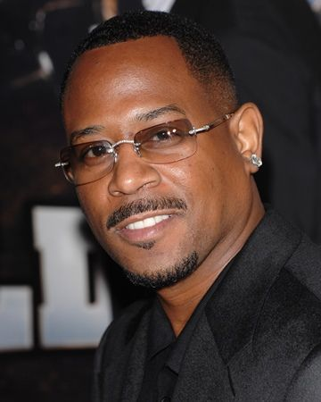
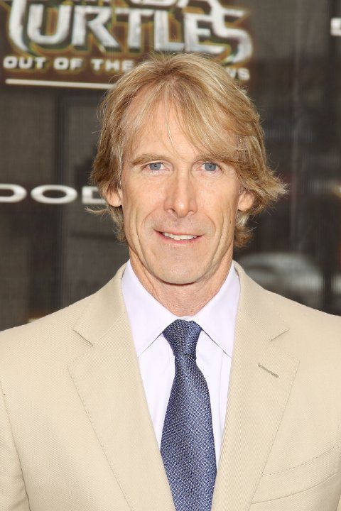
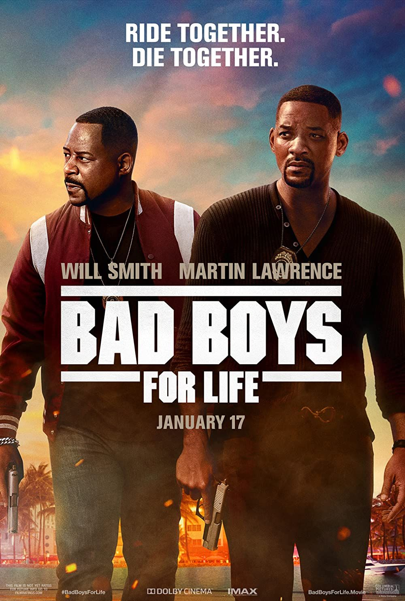

Guias para navegar no site
Bad Boys é um filme americano de ação-comédia lançado em 7 de abril de 1995, com direção de Michael Bay, e protagonizado pelos atores Martin Lawrence e Will Smith.
Marcus Burnett (Martin Lawrence) e Mike Lowrey (Will Smith) são dois policiais do departamento de polícia de Miami que devem se juntar para recuperar um carregamento de drogas perdido. Um carregamento de heroína confiscada, avaliada em 100 milhões de dólares, foi simplesmente roubado do depósito. Eles contarão com a ajuda de uma testemunha, Julie, porém para isso um terá que se passar pela identidade do outro.

Willard Carroll “Will” Smith Jr. Nascido na Filadélfia, 25 de setembro de 1968, é um ator, rapper, e produtor de cinema americano. É filho de Caroline Bright, uma administradora do conselho escolar da Filadélfia, e Willard Carroll Smith, Sr. um técnico de refrigeração. Ele cresceu em West Philadelphia, num bairro chamado Wynnefielde, e foi criado batista.Ele tem três irmãos, uma irmã chamada Pamela, que é quatro anos mais velha, e os gêmeos Harry e Ellen, que são três anos mais jovens. Will Smith estudou em Nossa Senhora de Lourdes, uma escola privada católica na Filadélfia.
No fim da década de 80, Smith alcançou uma modesta fama como rapper, sob a alcunha de "Fresh Prince". Em 1990, sua popularidade aumentou dramaticamente quando ele começou a estrelar o seriado The Fresh Prince of Bel-Air, que durou seis temporadas até 1996. Depois que a série terminou, Smith fez a transição de televisão para o cinema e estrelou várias filmes de sucesso, incluindo as franquias Bad Boys (1995), Independence Day (1996) e Men in Black (1997) .
Will Smith é mundialmente conhecido principalmente por atuar na sitcom The Fresh Prince of Bel-Air (Um Maluco No Pedaço), de 1990 até 1996, além dos filmes Men in Black (MIB - Homens de Preto), The Pursuit of Happyness (À Procura da Felicidade), Hancock, e pelo papel de Floyd Lawton/Pistoleiro, personagem da DC Comics no filme Esquadrão Suicida, do Universo Estendido DC. Após o sucesso que veio do filme de ação Bad Boys, de 1995, a carreira de Will Smith estava assegurada. Um ano depois, participou do grande êxito Independence Day, onde desempenhou o papel de Steven Hiller.
Ele é uma das poucas pessoas que desfrutam sucesso nas três maiores mídias de entretenimento nos Estados Unidos: cinema, televisão e a indústria fonográfica. Will Smith é vencedor de quatro prêmios Grammy e já lançou onze álbuns, sendo os seis primeiros ainda como The Fresh Prince, com o DJ Jazzy Jeff, e os cinco últimos, solo. Participou de 21 filmes, seja como dublador (Shark Tale), narrador (A Closer Walk) ou produtor.

O quarto, de seis filhos, Martin Lawrence nasceu em Frankfurt, Alemanha Ocidental (atual Alemanha) em 16 de abril de 1965. Filho de pais afro-americanos, que estavam servindo o Exército dos Estados Unidos na Alemanha, na época do seu nascimento. O nome de Lawrence foi em homenagem ao líder dos direitos civis Martin Luther king Jr. e ao presidente dos EUA John F. Kennedy.
Martin Lawrence acabou de se mudar para Nova York e encontrou seu caminho para The Improv. Pouco tempo depois de aparecer no The Improv, Lawrence ganhou um ponto de desempenho no Star Search. Ele se saiu bem no show e chegou à rodada final, mas não ganhou. No entanto, os executivos da Columbia Pictures Television viu o desempenho de Martin e ofereceu-lhe o papel de "Maurice" no seriado de televisão "What's Happening Now!!"; este foi o seu primeiro trabalho. Depois disso, Martin participou de diversos filmes ao longo de sua carreira, Martin Lawrence estrelou filmes como Bad Boys, ao lado de Will Smith, e a trilogia Vovó...Zona. Ele também estrelou filmes criticados pela critica e fracos na bilheteria como por exemplo os filmes Loucuras na Idade Média e Segurança Nacional. Atuou no filme Motoqueiros Selvagens ao lado de John Travolta, Tim Allen e William H. Macy.
Saiba mais sobre os outros atores do elenco
Michael Benjamin Bay é um diretor e produtor de cinema americano. É conhecido por produzir filmes de ação com grandes orçamentos, cortes rápidos e extenso uso de efeitos especiais, em especial explosões.

Netflix e Claro tv+

Os detetives de narcóticos Mike Lowrey (Smith) e Marcus Burnett (Lawrence) foram escolhidos para uma tarefa de alta tecnologia na investigação do tráfico de ecstasy em Miami. Os inquéritos inadvertidamente os levam para uma conspiração maior a um traficante, que se auto nomeia Johnny Tapia (Jordi Mollà) cujas ambições de tomar conta da cidade iniciarão uma guerra de quadrilhas. Mas a amizade e a relação profissional entre Mike e Marcus ficam abaladas quando Mike começa a gostar de Syd (Gabrielle Union), irmã de Marcus. A menos que eles consigam separar a vida pessoal da profissional, a dupla corre perigo e arrisca a vida de Syd no processo.

Boys for Life é um filme americano sendo o terceiro filme da franquia desde o seu último lançamento, Bad Boys II (2003). Foi dirigido por Adil El Arbi e Bilall Fallah, produzido por Jerry Bruckheimer. Terceiro episódio das histórias dos policiais Burnett (Martin Lawrence) e Lowrey (Will Smith), que devem encontrar e prender os mais perigosos traficantes de drogas da cidade.